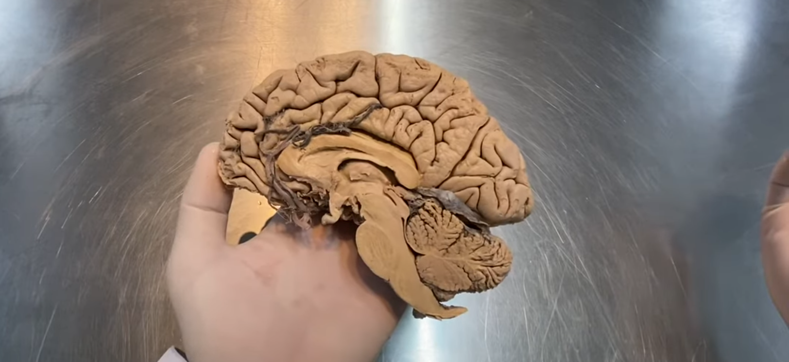
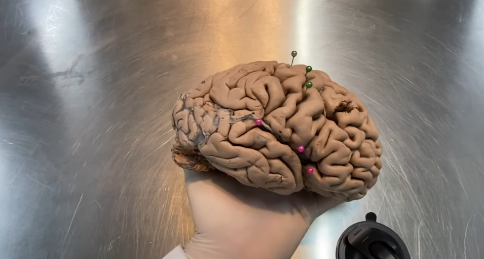
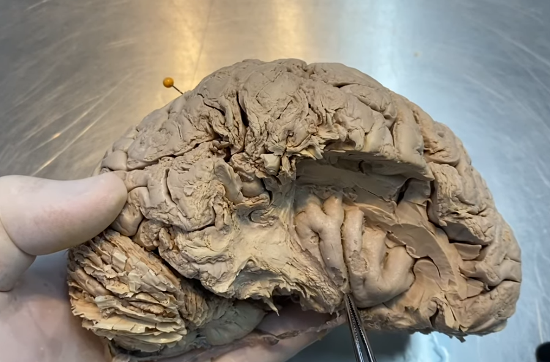
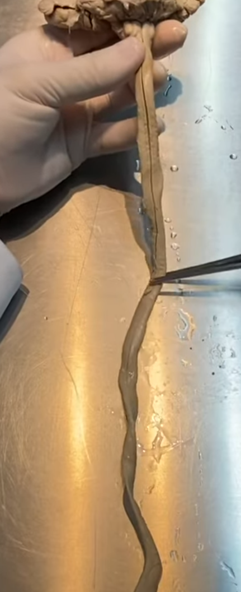
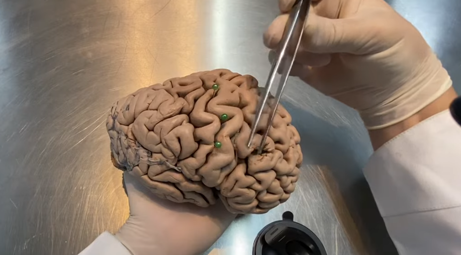
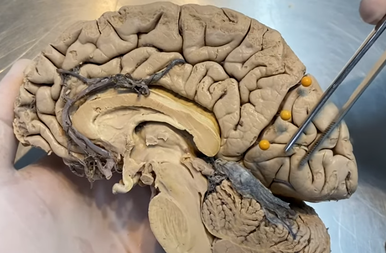
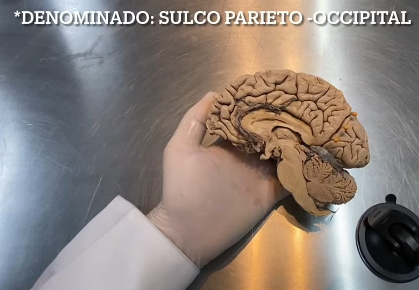

ClinicusMed · Dossiê Clinicus — Padrão de Excelência

| Divisão | Componentes |
|---|---|
| Cérebro | Telencéfalo + Diencéfalo |
| Cerebelo | Hemisférios cerebelares + Vérmis |
| Tronco encefálico | Mesencéfalo, Ponte e Bulbo |

| Estrutura | Localização |
|---|---|
| Lobo Frontal | Anterior ao sulco central |
| Lobo Parietal | Posterior ao sulco central, superior ao sulco lateral |
| Lobo Temporal | Inferior ao sulco lateral |
| Lobo Occipital | Posterior, delimitado (na face medial) pelo sulco parieto-occipital |

O lóbulo da ínsula não é visível na superfície externa do encéfalo em condições normais — fica "escondido" no fundo do sulco lateral, coberto por partes dos lobos frontal, parietal e temporal (chamadas de opérculos). Só é visto quando essas estruturas são afastadas ou removidas na dissecção, como na foto acima.




Pra comparar a peça com um atlas de referência, explore o modelo interativo abaixo (sistema nervoso):
🔗 Abrir Atlas em Nova AbaReconhecer os lobos cerebrais na prática é essencial pra correlacionar sinais clínicos com a área provavelmente afetada num AVC: lesões no lobo frontal (giro pré-central) causam déficit motor contralateral; lesões no lobo parietal (giro pós-central) causam déficit sensitivo; lesões no lobo temporal podem afetar memória e compreensão de linguagem (área de Wernicke, hemisfério dominante); lesões occipitais afetam a visão.
Em quadros de hipertensão intracraniana grave, o tecido encefálico pode ser deslocado através de aberturas rígidas (foice do cérebro, tenda do cerebelo, forame magno) — é essencial entender a disposição espacial normal do cérebro, cerebelo e tronco encefálico (vista no corte sagital) pra compreender por que certas herniações comprimem estruturas vitais do tronco encefálico, levando a risco de morte.
A ínsula, apesar de "escondida", tem papel em funções autonômicas, viscerais e de dor — crises epilépticas originadas nessa região podem ter apresentação clínica atípica (sintomas autonômicos, sensação visceral), sendo um diagnóstico diferencial importante em epilepsias de difícil controle.
A Clinicus selecionou este conteúdo para complementar seu estudo. Não substitui a leitura da ficha — a ficha ensina, o vídeo reforça.
Carregando recomendações...
O sistema guarda, no seu navegador, quais cards você já sabe bem e quais precisam voltar mais cedo.
Escolhe uma alternativa, depois clica em "Ver comentário completo".